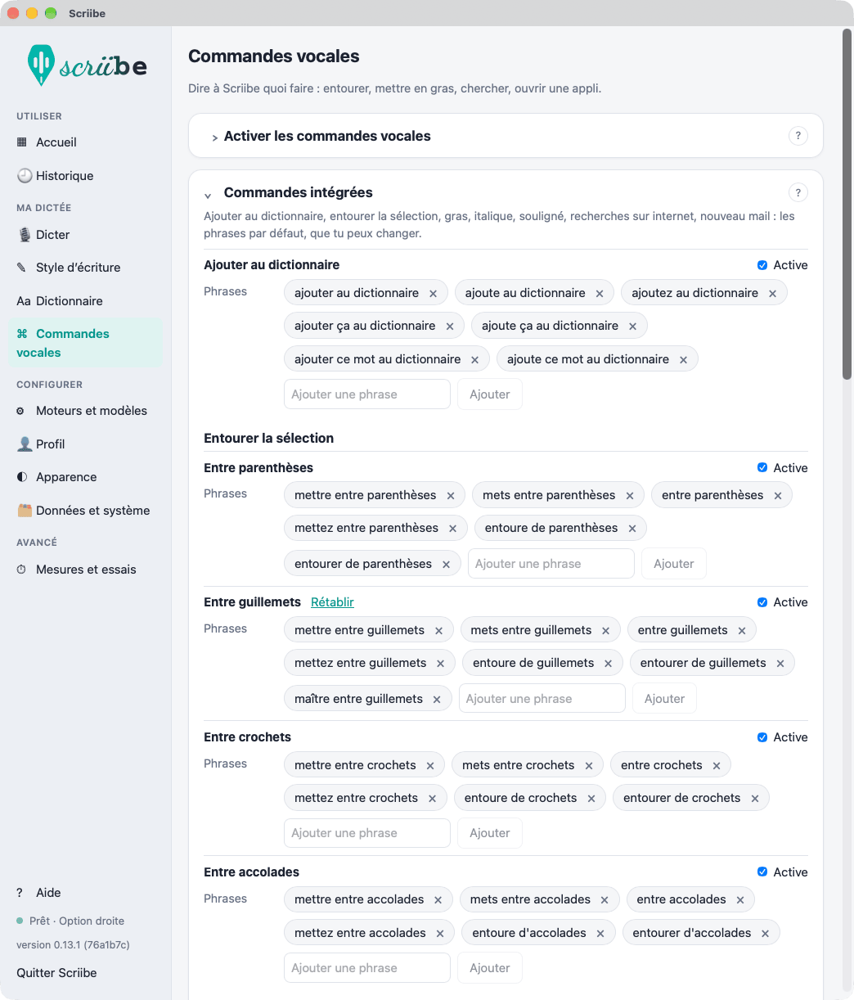
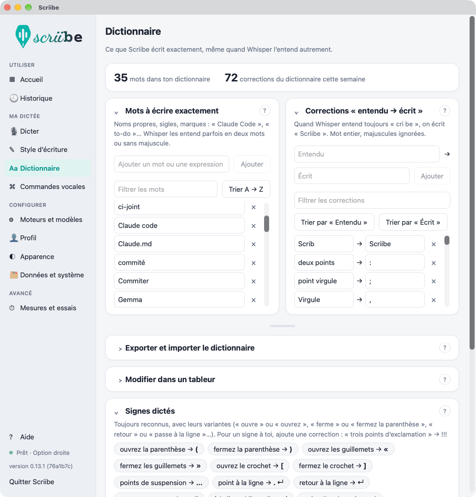
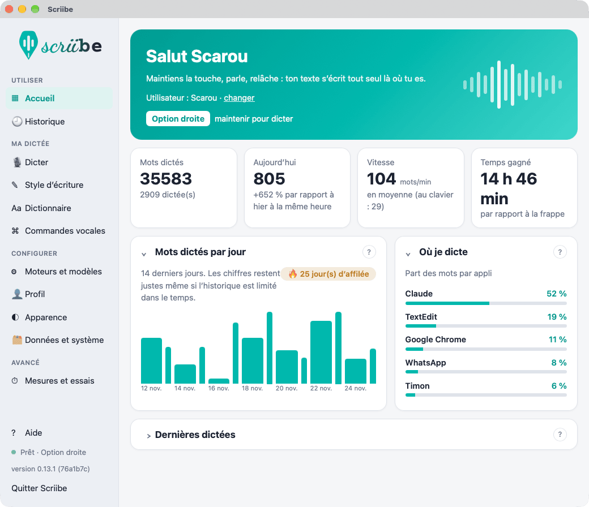

Tu parles, Scriibe écrit.
Maintiens une touche, parle, relâche : ton texte est transcrit, mis au propre et collé dans l'appli ouverte. Pour Windows, Mac et Linux, libre et gratuit.
Gratuit · Windows, Mac, Linux · aucun compte. Prérequis et premier lancement
Scriibe s'installe sur ordinateur (Windows, Mac ou Linux) : ouvre cette page depuis ton ordinateur pour la télécharger.
Comment ça marche
- Maintiens ta touche de dictée (Option droite sur Mac, Ctrl droit sur Windows, Ctrl+← sous Linux ; réglable).
- Parle normalement.
- Relâche : le texte arrive là où se trouve ton curseur, ponctué et mis au propre.
Ce qu'elle sait faire
Partout
Dans n'importe quelle appli où tu peux écrire (sous Linux, dans un terminal, tu colles à la main).
Sur ta machine d'abord
Whisper transcrit ta voix, puis llama.cpp, LM Studio ou Ollama mettent le texte au propre, le tout sur ton ordinateur. Les modèles se téléchargent depuis l'appli, avec ton accord à chaque fois. Si ta machine est trop juste, tu peux passer par des services en ligne avec tes propres clés.


Commandes vocales
Sous une seconde touche, dis « nouvelle recherche Google, YouTube, Wikipédia ou DuckDuckGo » suivi du sujet, insère un extrait, ouvre une appli, commence un nouveau mail, ou dis « entre guillemets » pour entourer ta dernière dictée.


Ton dictionnaire
Tes mots, tes noms propres et tes corrections, modifiables sur place ou dans un tableur.


Ton tableau de bord
Tes chiffres de dictée, un graphique sur 14 jours, la part par appli ; l'historique regroupe tes dictées par jour, avec un filtre par appli et par période.
Et aussi
- Style d'écriture : choisis comment ton texte est mis au propre (modes prêts à l'emploi ou les tiens).
- Reformuler une sélection (Mac et Windows ; pas sous Linux, où il n'y a pas non plus de gras ni d'italique) : sélectionne un texte et dis « cherche les fautes », « rends ça plus amical » ou « traduis en anglais ».
- Traduction : une touche pour dicter dans une autre langue.
- Profils : plusieurs utilisateurs sur la même machine ; sauvegarde complète, export et import pour changer d'ordinateur.
- Aide intégrée, avec une recherche qui marche hors ligne. Interface en français et en anglais.
Télécharger
Le numéro et les tailles viennent de la dernière Release.
| Système | Ce qu'il faut | Fichier |
|---|---|---|
| Windows | Windows 10 ou 11, 64 bits | scriibe-windows-x64.zip (20 Mo) · guide pas à pas |
| Mac | Puce Apple, macOS 14 ou plus récent | page de la dernière Release : prends le fichier qui finit par macos.zip (21 Mo) · guide pas à pas (avec le Terminal) |
| Linux | Ubuntu 25.04 ou plus avec GNOME, ou une session X11 | scriibe-linux-x64.zip (23 Mo) · guide pas à pas |
Toutes les versions et les guides pour connaisseurs sur GitHub.
Questions
Où partent mes dictées ?
Ça dépend du moteur que tu choisis dans « Moteurs et modèles ».
- Moteurs locaux (Whisper, llama.cpp, LM Studio, Ollama) : ta voix et ton texte sont traités sur ta machine.
- Moteurs en ligne (Deepgram pour la voix, OpenRouter pour la mise au propre), en dépannage : ta voix part chez Deepgram et ton texte chez OpenRouter. Il te faut un compte et une clé personnelle pour chacun, payants à l'usage.
- Reformulation d'une sélection : le texte sélectionné ne part que vers un moteur sur ton ordinateur, sauf si tu coches toi-même l'accord pour un moteur en ligne.
Scriibe ne t'impose pas le cloud.
Où sont rangés mon historique et mon dictionnaire ?
Sur ta machine, à part du programme : une mise à jour les garde. Tu choisis si le texte de l'historique est conservé et combien de temps. Tes clés en ligne sont dans le trousseau du Mac, le Gestionnaire d'identifiants de Windows ou le trousseau du bureau sous Linux, jamais affichées.
Scriibe contacte-t-elle Internet toute seule ?
Aucune télémétrie : rien n'est envoyé sur ton usage. L'alerte de nouvelle version est désactivée par défaut. Les modèles locaux ne se téléchargent qu'avec ton accord, un par un.
Faut-il installer autre chose ?
Les modèles locaux se téléchargent depuis l'appli, avec ton accord, un par un. Les programmes qui les font tourner s'installent à part sur Mac, par Homebrew : le guide pas à pas du Mac montre comment.
Faut-il une machine puissante ?
Le local marche mieux avec une bonne carte graphique ou une puce Apple. Sur un portable modeste, la dictée reste possible, plus lente ; les moteurs en ligne sont alors plus rapides. Pour la reformulation, un modèle de quelques milliards de paramètres est conseillé.
C'est vraiment gratuit ?
Oui. Scriibe est un logiciel libre sous licence MIT : tu peux l'utiliser, le modifier et le redistribuer. Le don sert à soutenir le travail ; il ne débloque rien.
Et Scribe ?
Scribe était la première version, pour Mac seulement. Scriibe prend la suite sur Windows, Mac et Linux.
Un problème ?
Page « Mesures et essais » → « Copier le rapport », puis ouvre une demande sur GitHub (Issues).
Si Scriibe te fait gagner du temps
Scriibe est gratuite et le restera. Si elle te rend service, tu peux laisser ce que tu veux dans le chapeau, à partir de 3 € : un café, un repas. Ça aide à financer le temps passé à la faire évoluer.
Le paiement se fait sur Ko-fi, qui ne demande qu’un nom d’affichage et une adresse e-mail. Les moyens de paiement proposés (carte, PayPal) sont ceux de la page Ko-fi.
Tu peux aussi aider sans payer : en parler autour de toi, ou signaler un bug.